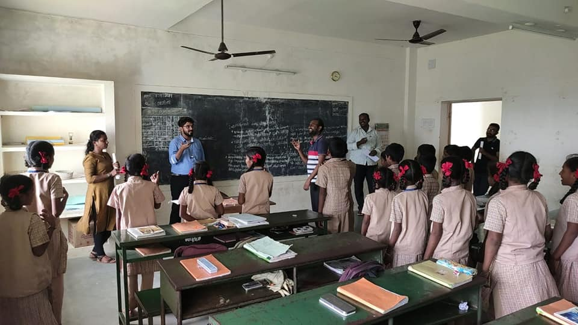
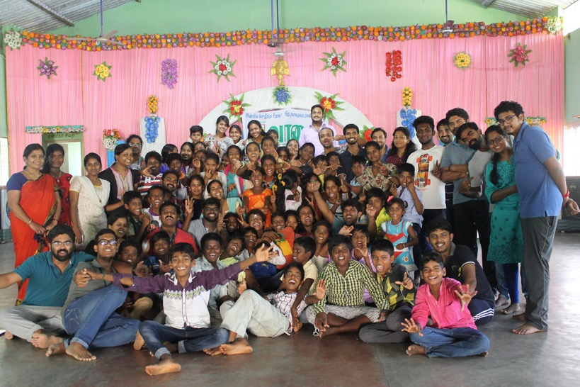
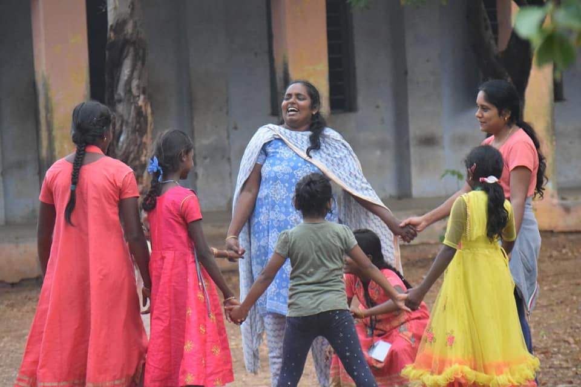

Your support keeps a child in school
Volunteer for one day a month, or make a monthly donation to keep a School Companion in the field.
Where teachers cannot reach, we teach.
Where parents cannot guide, we provide.
We place full-time School Companions in remote government schools across rural Tamil Nadu.
VAZHAI believes education is the path to a more equal society — where a child's opportunities are not decided by their village, background, or family income. We place trained, full-time School Companions inside the schools that are most forgotten.
Supported
the Ground
Served
Target 2026
What rural schools face daily
Geography as isolation
Schools sit 20–30 km inside forest roads. Teachers don't stay. Many primary schools have just one teacher for every grade.
Silent dropout
Parents migrate for daily wages, sometimes taking children. Dropout doesn't announce itself — a child just stops showing up.
No roadmap
First-generation learners with no one at home who's been through school or college. They don't know what's possible.
Compounding gaps
A child who can't read by Class 5 rarely catches up alone. Without targeted support, the gap widens every year.



Students & Volunteers speak
"I used to find difficult sentences hard to read. Our School Companion helps us every day."
"After Vazhai's career guidance session, I finally understood what courses are available to me."
"நானும் இந்த ஊர்ல தான் வளர்ந்தேன். தினமும் அவங்களோட இருந்து படிக்க உதவுறது எனக்கு ரொம்ப சந்தோஷம்."
"I grew up in this very village. Helping them learn every day brings me so much joy."
"Being part of Vazhai makes us feel connected to something real. Even joining calls and reviewing materials matters."
"The students at Kodakarai had so many questions about careers — you could see they were hungry for information."
Our journey
A child is waiting.
You can be the reason they stay.
Every rupee goes to keeping a trained adult present in a remote school — not a project, not a programme. A person, every day.
Tell someone who cares.
Every share brings Vazhai closer to its next school. It costs nothing and means everything to a child in Krishnagiri forest area.